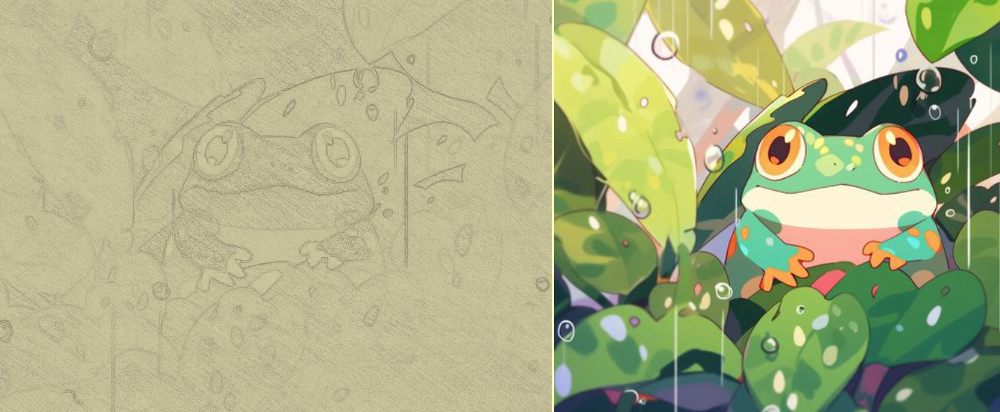

Pencil Shader
A plugin created in Godot, designed to transform any image into a pencil drawing.
The shader has many different options, making it incredibly versatile as all of its rendering is done in real time. The line thickness, edge thickness, textures used, intensity per texture, scale per texture, and texture per image RGB intensity can all be adjusted.
To make this work, the images RGB values are converted to a 0-1 scale, creating different textures per intensity. Greater intensities invoke a greater pencil thickness, with a darker color and thicker texture, where as the lower intensities are replaced by a thinner pencil texture. Each of these textures are manipulated by the intensity values ensuring there are distinct differences in similar intensity regions.
From the 0-1 RGB intensity value created, an edge detection shader pass is done, creating the sharp defined edges, which is a sharp pencil texture overlaid onto the image at the sharp boundaries depending on the difference of RGB intensity between each surrounding pixel. This pass is then deformed by a low intensity perlin noise texture, making the pencil strokes less uniform and look more hand drawn.
A large optimization depending on the use case of the shader would be making the sharp edge pencil edge filter be done in one post processing pass instead of per picture, reducing the repeated high performance calculation per image, and allowing depth to be used to draw edges dynamically in the game world adding additional variety and dynamism to the effect during realtime gameplay/rendering.